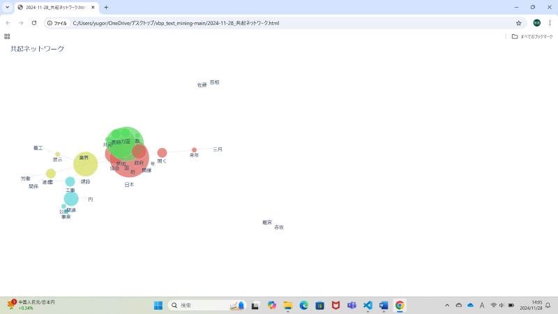
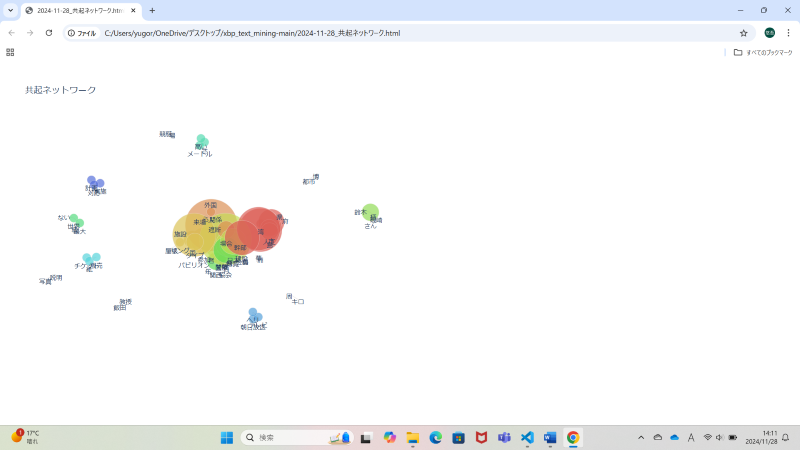

テキストマイニング
1970年の大阪万博と2025年の大阪万博について書かれた朝日新聞の記事のテキストマイニングを行った。
対象は1969年3月15日～9月13日と2024年4月13日～10月13日の間の記事である。どちらも2万字で、値は6,5,5にした。
「共起ネットワーク」
1970年/2025年

「サンバースト」
- 撮影日時：2024年10月20日 16時ごろ
- 撮影場所：神奈川県川崎市 武蔵小杉駅の近く
看板を見た瞬間に思わず撮ってしまいました。「BAR BUSU」という名前のインパクトが強すぎます。
ちなみに店内には優しい店長や、マッチョのメンズ、かわいいニューハーフなどがいるそうです。
名前と違って、身も心もBUSUな人は一人もいないみたいですね。